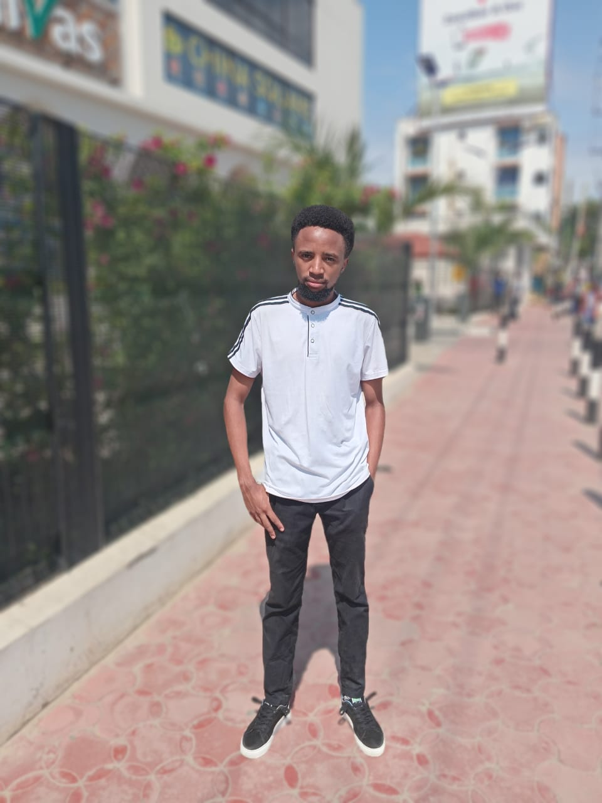

Hi, I’m Fredrick Ondara

— a junior web developer with a passion for both clean code and heartfelt storytelling. This website is my personal project, created out of a love for love itself — its stories, its emotions, and its magic. I specialize in crafting responsive, visually engaging websites, and I’m always open to work, grow, and collaborate. Whether it’s designing a romantic interface or building user-friendly pages, I aim to make every click feel like a connection.
Reach me out on whatsapp and calls: +254703589175,+254731055192